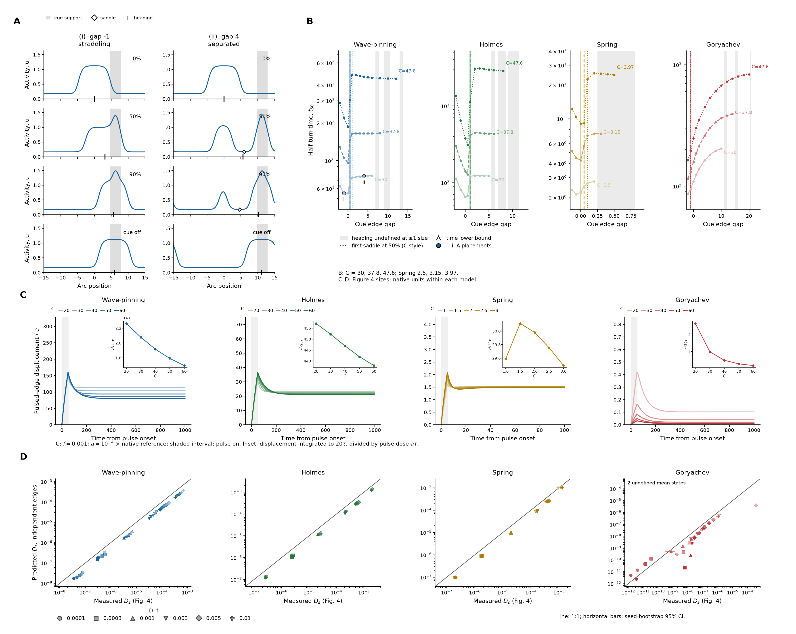
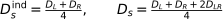
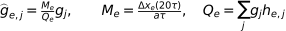
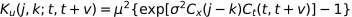
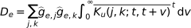
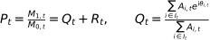
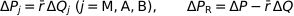
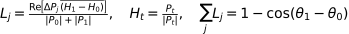
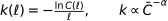

Generated 2026-10-23T18:45:47.065872+00:00; document producer finished. Simulation and analysis completion are recorded with each figure.
Integrated manuscript outline · Figures, legends and pilots · Prospective pilot table
Figure and legend · Full supplement

A. Native Wave-pinning active species u versus arc position centred on the incumbent’s initial centre, at C = 30 for (i) gap −1 (straddling) and (ii) gap 4 (separated). Rows show 0%, 50% and 90% of the target heading under continuous cue, then the final cue-free profile. Grey shading marks the fixed cue support in every row; open diamonds mark an inter-region saddle where resolved, and black ticks on the arc axis mark heading. Each column shares its y-scale.
B. Time to 50% of the angle from initial activity-vector heading to the cue direction versus initial cue edge gap (near edge of cue support minus the incumbent’s 10%-contrast boundary).. Time and length retain each model’s native units. Curves, gaps, brackets and three Figure 3 sizes are unchanged; lighter solid, intermediate dashed and darker dotted lines denote increasing C. Filled i–ii markers identify A.
Vertical lines mark the first tested gap with two resolved regions and a saddle at the 50% crossing for each C, using that size’s line style; the existing periodic watershed detector is applied to the native saved-field interpolant. Light grey bands mark sampled near-antipode placements with undefined heading at one or more sizes (activity-vector coherence R < 0.05 or a cancellation interval); that size’s curve breaks there. Open up-triangles mark censored time lower bounds; horizon caps are not measured values.
For the relaxation row only, cue-off occurs at 95% heading or at 20,000 if 95% is not reached, restarting from the full native event state after an identical cue-on replay. No-cue relaxation stops when max |∂u/∂t| reaches the existing tolerance 2.2683 × 10⁻⁷ (native activity per native time; the original 10⁻⁴ scaled-RHS tolerance over 1,000 time units), or after four times the cue-on duration. i: cue off at 95% heading, t = 790.5; relaxed for 258.6, stopped at stationarity; ii: cue off at 95% heading, t = 227.6; relaxed for 291.3, stopped at stationarity.
C. Control-subtracted displacement of the pulsed falling half-contrast edge, divided by peak input a, at f = 0.001. Shading denotes Figure 4 circumference: chemical C = 20, 30, 40, 50, 60; Spring resting C = 1, 1.5, 2, 2.5, 3. The stationary polarized state at each declared constant mean is used, without noise or retuning. A Gaussian pulse centered on the boundary has spatial SD ℓ = 1.5 and duration τ = 50 (Spring 0.15 and 5). Peak a is 10⁻⁴ of the native reference: 10⁻⁵ Wave-pinning, 10⁻⁴ Holmes, 4 × 10⁻⁴ Spring and 6.4 × 10⁻⁴ Goryachev. The grey interval is pulse-on. Inset A₂₀τ is displacement integrated through 20τ divided by pulse dose aτ. Both edges, a/2 and 2a are checked in the supplement. A residual positional offset is allowed because translation is neutral; this is not an infinite displacement integral. Largest/smallest terminal displacement per pulse dose is 0.701 Wave-pinning, 0.914 Holmes, 0.989 Spring and 0.0878 Goryachev.
D. The prescribed independent-edge prediction, Dₛ = (Dleft + Dright)/4, against physical tracked domain drift measured in Figure 4 at f ≤ 0.01 (markers). Colors and shading match C. Each measured terminal edge gain per pulse dose scales the native spatial response shape, normalized to give unit response to that exact localized pulse; this extra spatial-shape assumption is explicit. The native linearization supplies its shape only, while measured C amplitudes supply its gain; the imposed discrete spatial covariance and phase-averaged OU-knot interpolation enter the exact lognormal covariance μ²[exp(σ²CₓCₜ) − 1], with σ = 1. There is no diffusion fitting or parameter adjustment. Line: 1:1; horizontal bars: Figure 4 whole-seed-bootstrap 95% CI. This predicts Figure 4’s tracked drift, not total heading decay. The independent prediction/observation medians are Wave-pinning 0.511, Holmes 0.540, Spring 0.534, Goryachev 0.437. Goryachev spans 0.00359–4.01 across conditions, so a single bias does not summarize its failure. Goryachev C20/C30 at f = 0.01 has no polarized boundary at the declared mean, so its prediction is undefined.
The edge-independence supplement measures simultaneous half-contrast displacements from existing Figure 4 exemplar profiles, seeds 0 and 1, using uninterrupted single-region intervals and exposing float16 precision limits. At quarter-window lag, resolved median correlations are Wave-pinning 0.980, Holmes 0.983, Spring 0.997, Goryachev 0.759. Positive common motion violates edge independence. Retaining the native shared translation covariance doubles the prediction; this sensitivity is supplementary and does not adjust any parameter. Goryachev’s disagreement and short valid-region exposure remain explicit.
Cellular counterpart of C: photoactivation straddling a leading-edge boundary, tracking both flanking boundaries and their displacement after withdrawal. Native units are not calibrated between models. deBelly is excluded from rings.

(3.1)The main panel applies edge independence; the supplement retains the measured positive boundary coupling.

(3.2)Measured terminal displacement per pulse dose supplies gain. The unchanged native linearization supplies only the spatial shape g; h is the actual localized pulse shape. No measured diffusion enters.

(3.3)This is the declared lognormal covariance, with the exact discrete circular spatial kernel and variance-normalized OU-knot interpolation; the knot phase is averaged.

(3.4)Native linear response and the convention MSD = 2Dt give each marginal edge diffusivity. The time integral is evaluated without generating new stochastic inputs.
Figure and legend · Full supplement

A. Drifting peaks, same-rate null relocations and perimeter-rate null relocations give size exponents 2, 0 and −1. Null kymograph widths follow circumference; time increases upward. Autocorrelations C(ℓ) use solid C20 and dotted C60 curves. The null relocations are illustrative whole-peak moves, distinct from measured dominant-region replacements and birth-to-takeover events.
B. Larger rings retain heading across stronger fluctuating input. Input fraction f sets the ensemble mean to f times the native reference (Wave-pinning 0.1; Holmes 1; Spring 4; Goryachev 6.4). Input is positive lognormal, mean × exp(σZ−σ²/2), with unit-variance Gaussian driving field Z and σ=1. The spatial parameter ℓ and OU correlation time τ are 1.5 and 50 in chemical models; Spring uses basal-physical ℓ=0.15 and τ=5, with physical ℓ scaling with its changing circumference. Local size exponents α and noise-tolerance folds use model hues and light-to-dark circumference ramps. Open symbols in the exponent and drift panels identify conditions flagged as forced by the frozen matched-mean/lower-noise controls; open diamonds in the fold panel identify Goryachev irrespective of forcing; vertical intervals are pointwise 95% whole-history bootstrap intervals. Boundary triangles retain off-scale values. 125/260 local neighborhoods resolve, including 11 Goryachev neighborhoods. Largest-size tolerance folds are Wave-pinning 2.373, Holmes 2.155, Spring 3.088 and Goryachev 4.122. f₁/₂ is the first input crossing of C(ℓ)=0.5 at reference lag 2000 (Spring 200); Spring circumference is multiplied by 20 only in the fold panel.
C. Each model kymograph is rolled to place its initial activity-moment heading at the ring centre, to the nearest retained spatial bin. The two sizes share the existing selected input and replicate; the time window and raw evidence are unchanged. Activity scales are shared within Wave-pinning, Holmes and Spring. Goryachev uses a separate scale at each size: 0–9.2 at C20 and 0–83 at C60. Black outside ticks indicate persistent dominant-region replacements. Ensemble C(ℓ) below retains defined small- and large-size correlations. A low-contrast initial heading may have weak biological meaning even though the numerical roll is defined.
D. Physical within-tenure drift Dₛ is normalized by the smallest size at the same input. Unity gives the equal-physical-drift geometric expectation α=2. Weak-input log–log fits for f≤0.01 give exponents Wave-pinning 1.96–1.99; Holmes 1.94–1.95; Spring 1.87–1.93. The second row shows the existing event-based predicted/observed decay only where f≤0.01 and multiple regions occupy at most 5% of frames. 45/47 eligible point comparisons lie within 15% (Wave-pinning 16/16; Holmes 15/16; Spring 14/14; Goryachev 0/1). These point predictions assign the scored-event mean angular loss to unscored replacements; this remains an assumption. Goryachev uses separate logarithmic ordinate ranges: 10⁻⁷–2 for normalized drift and 0.003–3.3 for decay ratio; other models use 0.2–8 and 0.3–3.3. The actual mean circumference, C̄, enters physical-to-angular conversion. Figure 3D independently predicts this measured drift from deterministic edge responses.
E. i, Certified secondary-domain birth rates per actual perimeter-time. A new track must persist at least five saved frames, have an incumbent in the preceding frame, and have a conservative support enclosure disjoint from every preceding region. The curves are lower bounds, not estimates of all no-overlap births: original masks and parent IDs were discarded. All persistent secondary onsets, including unresolved splits, supply upper bounds in the supplement. Exact split counts are unavailable for all 260 conditions. ii, Probability of five-frame global dominance within a common follow-up of 20 noise correlation times (1000 chemical units; 100 Spring), conditional on certified no-parent births. Births with shorter available follow-up are excluded; pointwise 95% whole-history bootstrap intervals are shown. Designed inputs f>0.01 are pooled without input reweighting. Distance d is the shortest centroid arc minus the estimated incumbent half-width: the incumbent’s preceding-frame full-basin excess amount divided by twice the preceding-frame global contrast h. This is an explicit plateau approximation. Curves distinguish d≤0, 0<d≤C/6 and d>C/6; circumference bins use nominal size while exposure uses actual circumference. The Figure 2B–C asymmetry motivates measuring initiation and replacement separately. The observed takeover decline applies to this finite-horizon, certified subset; unequal certification prevents a population-level birth/takeover claim. iii, Exact signed allocation of eligible endpoint heading loss over each condition’s existing analysis lag: M, shared-region motion; A, shared-region amount; B, track membership changes; R, moment residual. Membership includes unclassified splits and mergers. Three-factor symmetric Shapley changes of the normalized point-region moment plus the measured-moment residual sum exactly to the observed moment change. Their projections sum to 1−cos Δθ. Signed pooled fractions sum to one and may be negative or exceed one; cancellations are retained. The residual includes within-region shape and amplitude, unresolved activity and diffuse background. The symmetric-log color scale is linear for |fraction|≤0.1 and spans −10 to 10; black dots mark values outside that range. Gray cells lack an eligible lag or valid endpoint/hybrid moments. These are convention-dependent descriptive allocations, not causal fractions.

(4.1)A is complete region excess amount; θ is the tracked contour centroid angle. R is the measured moment residual, including region shape/amplitude, untracked activity and background.

(4.2)M, shared-track motion; A, coexisting amount; B, endpoint track membership including unresolved split/merge changes. The three changes in Q use the symmetric three-factor Shapley convention.

(4.3)Pooled signed fractions are sums of L_j divided by total measured heading loss. They retain cancellation, can exceed one, and depend on the stated accounting convention; they are not causal shares.

(4.4)C(ℓ) is activity-heading autocorrelation; C̄ is actual mean circumference. Endpoint eligibility uses |P|≥0.1. Drift closure is shown only at f≤0.01 and multiple-region fraction≤0.05.
Archived revision brief · Original task prompt · Source and protected-section receipt